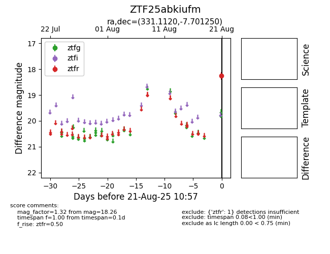

Target ZTF25abkiufm at 2025-08-21 10:57, see:
FINK: fink-portal.org/ZTF25abkiufm
Lasair: lasair-ztf.lsst.ac.uk/objects/ZTF25abkiufm
ALeRCE: alerce.online/object/ZTF25abkiufm
alt names
ZTF25abkiufm (ztf,alerce)
coordinates:
equatorial (ra, dec) = (331.1120,-7.70125)
galactic (l, b) = (51.2043,-45.98223)
photometry
last ztfr=18.26
1 ztfr detections
